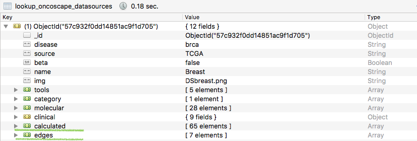
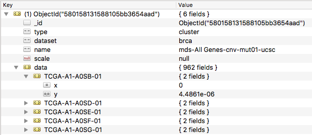
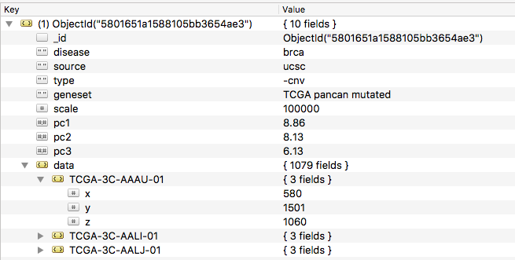
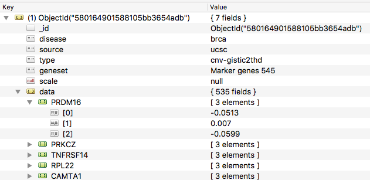
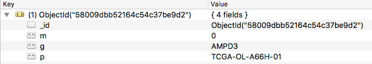
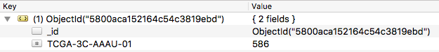
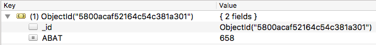

Introduction
Oncoscape is a data visualization platform that empowers researchers to discover novel patterns and relationships between clinical and molecular data. Through a suite of interoperable tools, Oncoscape offers a unique and intuitive approach to hypothesis refinement.For more detailed information, please read github repo page.
- Data Content
- data sources
- data types of clinical and molecular collections
- Data Provenance
- Explanation of the Oncoscape data processing pipeline
- Oncoscape interface
- Data Access
- Endpoint for Oncoscape Data API
- Syntax for simple query using browser
- Interactive web application to explore the data
Data Content
This section is dedicated to explain the raw data Oncoscape utilizes. The section Data Provenance explains how the raw data has been processed to fit into our visualization model.
Clinical Data
Data Sources
Genomic Data Commons Data Portal (GDC) from National Institutes of Health (NIH) provides the compiled annotated clinical data.
Data Type
| Type | Annotation |
|---|---|
| events | clinical events collection organized by patient |
| patient | patient collection for each disease type |
| drug | chemo or other medicine administration records |
| newtumor | new tumor event records for possible patients |
| othermalignancy | other maliganancy records for possible patients |
| radiation | radiation administration records |
| followup | possible follow-up records |
| newtumor-followup | possible follow-up records for the new tumor events |
| samplemap | sample-patient mapping collection |
Molecular Data
Data Sources
UCSC Xena compiled annotated normalized molecular datasets of various platforms from multiple institutes.
Data Type
| Type | Annotation |
|---|---|
| expr | Expression data including mRNA and microRNA expression data and Reverse hase protein array (RPPA) data |
| mut | non-synonymous mutations representated as strings in this collection |
| mut01 | non-synonymous mutations representated as binary values in this collection |
| meth | DNA methlyation data |
| meth_thd | Thresholded DNA methlyation data |
| cnv | DNA copy-number data represented as Gistic score |
| cnv_thd | Thresholded DNA copy-number data represented as Gistic score |
Schema
| Schema Type | Annotation |
|---|---|
| chr_sample | Collections of this schema have chromosomal location inhelper.formation as keys for each record, which is a list of values with samples as keys. |
| hugo_sample | Collections of this schema have chromosomal HUGO genes as keys for each record, which is a list of values with samples as keys. |
| sample_pos | Collections of this schema have samples as keys for each record, which is a list of position. |
| methoprobe_sample | Collections of this schema have methlyation probes as keys for each record, which is a list of values with samples as keys. |
Gene Sets
| Name | Description | Genes |
|---|---|---|
| TCGA GBM Classifiers | Gene expression-based molecular classification of GBM subtypes (Proneural, Neural, Classical, Mesenchymal) | 840 |
| Glioma Markers | Genes recurrently impacted in TCGA gliomas | 545 |
| TCGA Pancan Mutated | Significantly mutated genes according to the TCGA PANCAN working group (syn1750331) identified by both MuSiC and MutSig | 73 |
| Oncoplex Vogelstein | Combined set from the Oncoplex gene panel and driver genes described in Vogelstein, Science 2013. | 274 |
| Oncoplex | A sequencing panel that detects mutations in genes related to cancer treatment, prognosis, and diagnosis. | 263 |
| OSCC Expression Markers | Differentially expressed probe set comparing normal oral tissue to oral squamous cell carcinoma | 109 |
Data Provenance
This section is dedicated to explain how the raw data were processed to generate new data models to fit to Oncoscape visualization tools. The section Data Content explains the source and type of raw data.
Pipeline

Oncoscape Interface
We use lookup as an hand-off from data-generation to data-utilization. Lookup reminds us the data are organized by diseases. And they have the subcategories: clinical, molecular. Each document of the lookup collection is to describe the organization of all the disease-related collection structure. Within each document, except for the organization of actual data collections, there is metadata section.

The processed raw data are stored under ‘calculated’ and 'edges’ in each document. The 'calculated’ is explained in Cluster while the 'edges’ is explained in Network.
Cluster
The cluster collections are generated to fit into two Oncoscape tools 'Markers and Patients’ and 'PCA’. There are two Schemas for clutster collections: Multidimensional Scaling (MDS) and Principal component analysis (PCA).
MDS
cnv_thd and mut01 were combined and the distance matrix were calculated best represent the similarity of individual sample in the N-dimensional space.
- Schema

PCA
The collection of each class will be processed respectively that distance matrices were generated to best represent the similarity of individual sample in the N-dimensional space.
- Schema


Collection Organization
The naming convention of the derived collections includes the information from method, geneset as well as data class listed below.
| Methods | Genesets | Data Class |
|---|---|---|
| PCA | All Genes | RNA |
| MDS | TCGA Pancan Mutated | Protein |
| Oncoplex | CNV/Mut01 | |
| Glioma Markers | Mut01 | |
| Oncoplex Vogelstein | CNV | |
| TCGA GBM Classifiers |
Network
The network collections are generated to fit to Oncoscape tool 'Markers and Patients’. There are three Schemas for network collections: edges, patient weights and gene weights.
Edges
Edges contain the information to define the edges connecting one patient sample with one gene. For each record the value may be integer between -2 to +2. If one gene in one patient sample has copy number variation, this information will be represented as -2 (deletion), or -1 (loss), or +1 (gain), or +2 (amplificaiton). If this gene on this patient sample doesn’t have copy number variation but point mutation, this information will be represented as '0’. Otherwise, no record will be shown.
- Schema

Patient degrees
For a certain dataset, patient degrees record the number of altered genes (copy number variation and point mutation) for each patient.
- Schema

Gene degrees
For a certain dataset, gene degrees record the number of patients who have this gene altered (either caused by copy number varation or point mutation).
- Schema

Data Access
Oncoscape provides the API service based on the traditional RESTful API data structure. Data are secured with exposed by API Gateway Kong.. The privacy is managed at collection level. You can acess the public datasets through appending ‘apikey=password’.
Example to access one collection from browser
HTTP Request
Collections are accessable at the host: http://dev.oncoscape.sttrcancer.io/api/
The endpoint of oncoscape API is a unique URL. Every endpoint points to a unique collection. Below lists more details of the organization of the Oncoscape Mongo Database and the collections organized by disease type.
GET http://dev.oncoscape.sttrcancer.io/api/gbm_patient_tcga_clinical/?q=&apikey=password
Query Collection from Browser
HTTP Request
Filter by gender and race and only show the selected fields
GET http://dev.oncoscape.sttrcancer.io/api/gbm_patient_tcga_clinical/?q={"gender":"MALE", "race":"WHITE","$fields":["gender","race","patient_ID"],"$skip":5,"$limit":2}&apikey=password
only show gender, race and patient_ID
"$fields":["gender","race","patient_ID"]
skip the first five records
"$skip":5
limit the final output to two records.
"$limit":2
Explore the Oncoscape Database
Data Explorer is an interactive web application to explore the clinical collections in the database.